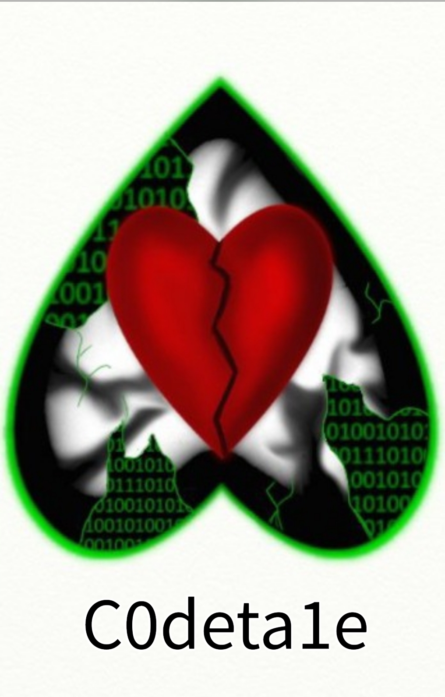

Welcome to the Stories page of Equanox Dragon Stories and Art

In the Wake of Ash
Scars can tell a lot about a person, and what they have been through. Alexandra Zalanster is from a well enough off family, yet her body is scarred badly. Her early childhood memories have been burned away, with only the memory of the sight of her home up in flames around her to tell her where her scars are from. With nowhere else for her to be herself without the leering and judging gaze of others on her, she turns to the internet. She eventually finds others who can relate to her experiences, and with the help of her new friends they begin to uncover the truth behind her charred past.

Lost Magic
In a world where magic is only the work of fiction and fairytales, a group of friends stumble upon a secret that changes their lives forever. Now caught up in a world of horrific dark experiments, and super weapons created for the sole purpose of destroying life, this group of unlikely heroes must find out the truth, and stop the encroaching darkness. If they will be able to succeed, or if they will fall to the shadows, only time will tell. Now is the time for Champions to be born, to rise against the evil, before it is too late.

C0deta1e
This is the story of C0de Sans, and how he came to be.
For now, all of these links will take you to the stories on Wattpad as I have yet to properly impliment a way to easily post them here and be able to update the stories without opening up the code again.